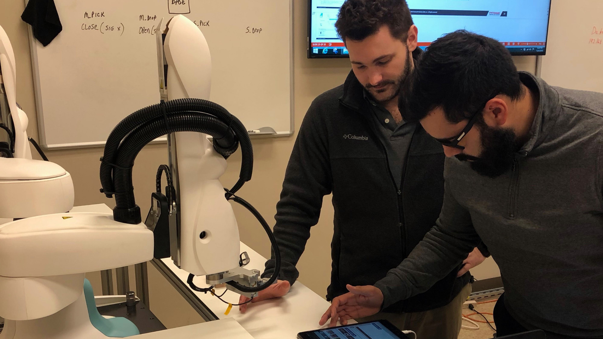

D&D fantasy races primer
A short module for a therapist friend who runs D&D-based therapy campaigns. Introduces basic fantasy races so younger patients can choose a character with more confidence before session one.
Training & learning operations
I build and lead training functions for tech companies in robotics, AI vision, SaaS, and automation. I turn complex products into onboarding, certification, and partner programs that drive revenue, competency, and measurable outcomes; fifteen years across channel, classroom, and digital delivery.

I'm a technical training and L&D leader based in Michigan. I've designed onboarding programs, in-person labs, train-the-trainer certifications, LMS operations, and sales enablement that people could use on the job; not slide decks that collect dust. My work has supported engineering and commercial teams in high-tech manufacturing and SaaS-style product environments.
Most recently at Apera AI, I built the training department, onboarding content, and course catalog from scratch. Before that, I spent three and a half years at Universal Robots as Regional Training Manager for North America. I ran partner QBRs and global training pilots, worked closely with the commercial education team, and led a distributed team across the U.S. and Canada. At Kawasaki Robotics, I focused on learning design: I built and edited a broad catalog of technical courses and led the move to online delivery using digital clone and simulation software (K-ROSET), alongside hands-on robotics and vision training for automotive and manufacturing clients. While at Liberty Robotics, I also created the company's training content and program from the ground up.
I started my career as a Peace Corps volunteer in Kyrgyzstan. That is where I developed my adult learning and pedagogy practices and got my first experience with train-the-trainer programs and teacher training. I later earned an MS in Management from the University of Illinois at Urbana-Champaign (Gies College of Business).
Outside of work, I love staying active with yoga and running and I volunteer with The Greening of Detroit and local animal rescues.
I've managed trainers, instructional designers, and matrixed application engineers. I've also owned scope, budget, and multi-year roadmaps for training at global brands and at fast-growing tech startups.
In addition to managing training departments and teams, I've recruited and hired new talent, coached and mentored for team performance, ran trainer certifications, and led the support arm for over 20 channel partner training programs.
I built Apera's training function and Michigan facility operations from the ground up: onboarding, purchasing, credentialing systems, and day-to-day learning ops. I've managed administered an Umbraco low-code LMS, partner ecosystems, and integrated CRM, LMS, and reporting across Salesforce and other platforms.
I defined what central training owned versus distribution partners: authorized training partner programs, teacher and trainer certification, industry versus education curricula, and when customers engaged internal teams versus the channel.
I authored 12-month through 3-year plans for internal and commercial training: revenue targets, education market entry, international train-the-trainer models, and KPIs tied to participation, quality, and business outcomes (not just completions).
Highlights from Apera AI, Universal Robots, Kawasaki Robotics, Liberty Robotics, and MBA consulting work. Fuller detail on request or via LinkedIn.
I stood up a commercial technical training offering on short notice; the program generated six figures in revenue since launch. I also led a 5-week onboarding for 10 new engineering hires (designed and delivered in two weeks) and built North American sales-enablement for 12 regional BDMs.
I expanded commercial training classes 68% and participation 107% and drove $500K in new annual revenue through partner management and process improvements. I piloted the Regional Training Manager model globally (+30% participation/revenue) and opened training facilities in Michigan and Massachusetts aligned to GTM strategy.
I led certification programs that enabled 400+ industry engineers and 300+ educators to deliver UR technical programming courses. I pushed IACET accreditation so 35% of participants earned continuing education credits. I increased repeat customer signups 10% through gamification.
I designed eight specialized courses and modernized manuals across the portfolio. I converted a 15-course catalog to online delivery using in-house K-ROSET digital clone and simulation software, which kept training running through the pandemic and generated about $400K in revenue. I also built ISO-aligned safety certification and an education curriculum tied to $500K+ in STEM robot sales.
A payroll and HR processes SaaS company asked me to develop a new framework for training a large support staff network. The goal was to increase CSAT scores, decrease escalations to managers, and shorten time to resolution for support agents. The case study covers the strategy in the first half; the second half includes an interactive mock lesson participants would walk through live.
In 2025 my MBA program was hired by a Brazilian ESG communications agency to develop a 12-month UK and US market entry plan. Out of ten pitch teams, the strategy I developed was selected after a presentation I led. Client leadership said mine came closest to a true step-by-step program for the next year, and that the deck flowed slide to slide like a narrative.
I created Liberty's customer and internal training program and led 15+ customer courses annually for Toyota, Ford, and GM. I managed a $1.2M Daihatsu (Japan) project and a $1M Ford Ohio Truck Plant project while developing 100+ training and operations documents.
Samples of e-learning, AI-assisted apps, and other deliverables. Click any screenshot in Agentic creations to open a larger view.
Interactive modules built for learners; hosted externally where noted.
A short module for a therapist friend who runs D&D-based therapy campaigns. Introduces basic fantasy races so younger patients can choose a character with more confidence before session one.
Apps and prototypes I built with AI and LLM tools, then reviewed and refined for real use. Pick a tab to explore.
A customer-facing readiness monitor I prototyped to show how prepared a plant team is to troubleshoot our product when a line goes down. It rolls up training, spare parts, backups, and trained assets; then surfaces remedial actions before downtime happens.
An assessment quiz I built from our product manuals to gauge how prepared a customer’s employees are to respond to faults and equipment downtime. This tradeshow version adds timed scoring, instant feedback, and a leaderboard so visitors could challenge each other on the show floor.
A low-code LMS I built on a minimal budget to post and schedule training. Course templates, self-registration, participant tracking, CRM integration, and SOC 2-aligned audit logging.
An L&D tool I built to help my team design new training courses. Storyboarding and planning in one place: workflow breakdowns, module design checklists, and module flow maps. The storyboard breaks each module into activities, content, quizzes, videos, and other screen types.
Consulting and MBA work: market entry plans, support enablement frameworks, and full case studies you can explore in depth.
A payroll and HR processes SaaS company asked me to develop a new framework for training a large support staff network. The goal was to increase CSAT scores, decrease escalations to managers, and shorten time to resolution for support agents.
The case study opens with the strategy: audience tiers, rollout timeline, the Identify-Impact-Resolve-Own playbook, measurement model, and scaling plan. The second half is an interactive mock lesson so you can step through how specialists experience the training.
In 2025 my MBA program was hired by Profile, a Brazilian B-Corp ESG communications agency, to create a 12-month strategy for expanding into the UK and US markets. Out of ten pitch teams, the plan I developed was selected after a presentation I led. Client leadership said mine came closest to laying out a true step-by-step program for the next year, and that the deck flowed easily from slide to slide like a narrative.
The full case study covers a three-phase roadmap (Ignite, Traction, Embed), positioning, budget allocation, risk mitigation, and projected outcomes across both markets.
Sample pages from learner workbooks and lab manuals. Pick a tab to explore.
Lab manuals I designed at Kawasaki for K-ROSET simulation training: guided exercises, safety checks, and comprehension questions paired with hands-on robot programming labs.
A learner workbook I created at Apera AI for our technical training program: module guides with objectives, timed exercises, and optional stretch tasks across robotics, Forge simulation, and equipment installation.
Open to training leadership roles, L&D operations, and technical enablement in tech, SaaS, robotics, automation, and AI. Based in Plymouth, Michigan (Detroit metro).